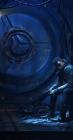
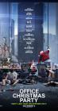
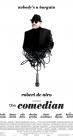
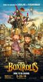
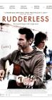
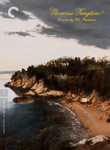
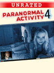

Historical: IMDb 2010s
http://www.imdb.com/chart/2010s
Showing Movies that were previously on this list. (Historical tracking started near the start of 2010.)- Normal View
List contains: 1613 items, 2007.5 hours. (447 are missing runtime)
Showing Movies that were previously on this list. (Historical tracking started near the start of 2010.)- Normal View
List contains: 1613 items, 2007.5 hours. (447 are missing runtime)
Stephen Klancher
...has seen 231
...has seen 378.2 hours
...has not seen 1629.3 hours

Timeline - Covers
Most Recent:
Avengers: Infinity War
First Unseen:
The Muppet Movie (# 11)
...has seen 231
...has seen 378.2 hours
...has not seen 1629.3 hours
Timeline - Covers
Most Recent:
Avengers: Infinity War
First Unseen:
The Muppet Movie (# 11)

Seen 108 times, Last seen February 14, 2023

The Princess Bride (1987)
Stephen Klancher: SEEN 
We rented this movie at my dad's house when I was very young. So young in fact that I had no idea what the movie was called. I just had a vague memory of a really cool movie about a man in black with the storytelling grandfather as a frame for the adventure. In high school somehow this movie came up and I was excited to learn not only the title of the movie lost in my memories, but also that many other people liked it too. "As you wish" and "My name is Inigo Montoya" always make me smile.

Seen 120 times, Last seen February 11, 2023

Cool Hand Luke (1967)
Stephen Klancher: June 21, 2009
Aptly named... he's a cool character. The Lucy and 50 eggs scenes were fun. I liked the simple question he asked of god near the end: "You made me like I am; just where do I fit?"

Seen 107 times, Last seen February 6, 2023

The Wizard of Oz (1939) Releases on 1939-08-25
Stephen Klancher: SEEN
I liked the Wizard of Oz and have often been excited to see newer takes on it. At some point my mom took me to see Wicked and I loved it. Though it turned out disappointing, I remember being excited over the SciFi variant Tin Man. Also, Zardoz. haha.
Seen 116 times, Last seen February 5, 2023

The Big Lebowski (1998) Releases on 1998-02-15
Stephen Klancher: SEEN
Brett introduced me to Lebowski and I have since watched it many times. Love it.
Seen 94 times, Last seen February 4, 2023
Fight Club (1999)
Stephen Klancher: SEEN
There's so much that is cool about this movie. But mostly the impact of the reveal the first time you watch it. The sort of Sixth-Sense change where you can then rewatch it as an entirely different experience.
Seen 100 times, Last seen February 3, 2023

Groundhog Day (1993) Releases on 1969-12-31
Stephen Klancher: SEEN
The joke is obvious but it's also the truth: I watched this movie over and over and over. This was one of a handful of movies we rewatched frequently growing up at my dad's house. I love Bill Murray and I love this movie.
Seen 104 times, Last seen January 31, 2023

The Muppet Movie (1979) Releases on 1979-06-22
Seen 102 times, Last seen January 28, 2023

Pulp Fiction (1994) Releases on 1994-10-14
Stephen Klancher: SEEN
Very fun. Reading Quentin Tarantino and Philosophy (http://www.amazon.com/Quentin-Tarantino-Philosophy-Popular-Culture/dp/0812696344) made it even more so.
Seen 108 times, Last seen January 24, 2023

Star Wars: Episode IV - A New Hope (1977)
Stephen Klancher: SEEN
I am very much a Star Wars fan. I've read about 40 books, played a handful of games, and seen most of what there is to see. There were some summers growing up where I was mostly watching the Star Wars trilogy and playing Mario 3.
2011-02-26 - Watched Star Wars Begins, the excellent fan-made documentary.
2011-02-26 - Watched Star Wars Begins, the excellent fan-made documentary.
Seen 103 times, Last seen January 22, 2023

Se7en (1995)
Stephen Klancher: SEEN
This movie did not strike me as much as most people I guess. Am I too desensitized? I just seem to remember Brad Pitt swearing a lot.
Seen 87 times, Last seen January 20, 2023
The Shawshank Redemption (1994)
Stephen Klancher: SEEN
I'm not sure it forever deserves the top spot on IMDB, but definitely a good movie. I remember watching it on TV some night in Jr High when I was supposed to be working some project... let's see, do a diorama of a scene from 1984 or watch Shawshank? Hmm...
Seen 89 times, Last seen January 18, 2023

Eternal Sunshine of the Spotless Mind (2004) Releases on 1969-12-31
Stephen Klancher: SEEN
I love this movie. Would I zap my brain? Probably. Maybe I already did. How would I know? Whatever. I love this movie.
Seen 98 times, Last seen December 16, 2022

The Lord of the Rings: The Fellowship of the Ring (2001) Releases on 2001-12-19
Stephen Klancher: SEEN
I read half-way through the books, quit for a while, then finished right before this came out. I actually like the movies better. I enjoy all three movies, but one notable thing about this one was much fun it was that everyone around me was really into it at the time. The fact that the girls I was friends with and girlfriend at the time were drooling over the actors just added another reason for everyone to be enthusiastic and want to keep rewatching it. So yeah, fun times. :-)
Seen 101 times, Last seen December 12, 2022

The Matrix (1999)
Stephen Klancher: SEEN
My parents (divorced) got in an argument over this movie. My dad wanted to take me to see it, but my mom, more strict at the time, didn't want it to happen. At some point she finally gave in, but then we had to go see it in the cheaper, crappier theater. It was still amazing, of course. And as Bob can attest, at any given time my dad's house on Mountain Oak probably had the DVD of this or Fifth Element playing. It's too bad they never made any sequels to this. <i>None. Never.</i>

Seen 15 times, Last seen December 20, 2017

Aliens (1986)
Stephen Klancher: January 17, 2008
Game over man! A totally different kind of cool than the first one. Plus like half of the sounds from StarCraft are from this movie.
Seen 509 times, Last seen December 20, 2017

Justice League (2017) Releases on 2017-11-17
Stephen Klancher: November 29, 2017

Seen 37 times, Last seen December 20, 2017

The Greatest Showman (2017) Releases on 2017-12-25
Seen 51 times, Last seen December 20, 2017

The Foreigner (2017) Releases on 2017-10-13
Seen 9 times, Last seen December 20, 2017

Ready Player One (2018) Releases on 2018-03-30
Seen 72 times, Last seen December 20, 2017
The Snowman (2017) Releases on 2017-10-20
Seen 146 times, Last seen December 20, 2017

Blade Runner 2049 (2017) Releases on 2017-10-06
Stephen Klancher: October 12, 2017
Seen 85 times, Last seen December 20, 2017
American Assassin (2017) Releases on 2017-09-15
Seen 52 times, Last seen December 20, 2017
The Mountain Between Us (2017) Releases on 2017-10-20
Seen 134 times, Last seen December 20, 2017
Valerian and the City of a Thousand Planets (2017) Releases on 2017-07-21


Seen 139 times, Last seen December 20, 2017
Atomic Blonde (2017) Releases on 2017-07-28
Seen 934 times, Last seen December 20, 2017

Star Wars: The Force Awakens (2015)
Seen 321 times, Last seen December 20, 2017

Star Wars: The Last Jedi (2017) Releases on 2017-12-15
Stephen Klancher: December 19, 2017
Seen 17 times, Last seen December 20, 2017

Annihilation (2018) Releases on 2018-02-23
Seen 252 times, Last seen December 20, 2017

Logan (2017) Releases on 2017-03-03
Stephen Klancher: September 1, 2018
Seen 100 times, Last seen December 20, 2017
Murder on the Orient Express (2017) Releases on 2017-11-10
Seen 312 times, Last seen December 20, 2017

Thor: Ragnarok (2017) Releases on 2017-11-03
Stephen Klancher: May 6, 2018
Seen 72 times, Last seen December 20, 2017

The Disaster Artist (2017) Releases on 2017-12-08
Seen 98 times, Last seen December 20, 2017

American Made (2017) Releases on 2017-09-29
Seen 352 times, Last seen December 20, 2017

Rogue One: A Star Wars Story (2016)
Seen 19 times, Last seen December 20, 2017

Solo: A Star Wars Story (2018) Releases on 2018-05-25
Stephen Klancher: May 26, 2018

Seen 308 times, Last seen December 20, 2017
Guardians of the Galaxy Vol. 2 (2017) Releases on 2017-05-05
Stephen Klancher: April 29, 2018
Seen 245 times, Last seen December 20, 2017

Avengers: Infinity War (2018) Releases on 2018-05-04
Stephen Klancher: January 5, 2019
Seen 24 times, Last seen December 20, 2017

Darkest Hour (2017) Releases on 2017-12-22
Seen 146 times, Last seen December 20, 2017

Kingsman: The Golden Circle (2017) Releases on 2017-09-22
Seen 9 times, Last seen December 20, 2017

Pitch Perfect 3 (2017) Releases on 2017-12-22
Seen 41 times, Last seen December 20, 2017
Jurassic World: Fallen Kingdom (2018) Releases on 2018-06-22
Seen 52 times, Last seen December 20, 2017

Lady Bird (2017) Releases on 2017-11-10
Stephen Klancher: November 11, 2018

Seen 38 times, Last seen December 20, 2017

Three Billboards Outside Ebbing, Missouri (2017) Releases on 2017-11-10
Stephen Klancher: March 3, 2018
Seen 225 times, Last seen December 20, 2017

Get Out (2017) Releases on 2017-02-24
Stephen Klancher: January 6, 2018

Seen 9 times, Last seen December 20, 2017
Ocean's Eight (2018) Releases on 2018-06-08
Seen 64 times, Last seen December 20, 2017

Logan Lucky (2017) Releases on 2017-08-18
Seen 45 times, Last seen December 20, 2017

I, Tonya (2017) Releases on 2017-12-08
Stephen Klancher: March 13, 2018
Seen 58 times, Last seen December 20, 2017

The Shape of Water (2017) Releases on 2017-12-08
Seen 30 times, Last seen December 20, 2017
Call Me by Your Name (2017) Releases on 2017-11-24

Seen 14 times, Last seen December 19, 2017

American Beauty (1999)
Stephen Klancher: December 31, 2002
Fantastic movie. Many good quotables. I tend to rather watch something new instead of rewatching anything, but if I see this on I'm completely unable to pull myself away.
Seen 14 times, Last seen December 18, 2017
Vertigo (1958) Releases on 1969-12-31
Seen 14 times, Last seen December 17, 2017

Dr. Strangelove or: How I Learned to Stop Worrying and Love the Bomb (1964)
Stephen Klancher: SEEN
Peter Sellers is amazing. Just remember, "you can't fight in here! This is the War Room!"


Seen 78 times, Last seen December 17, 2017

Black Panther (2018) Releases on 2018-02-16
Stephen Klancher: February 22, 2018
Seen 6 times, Last seen December 17, 2017
Phantom Thread (2017) Releases on 2018-01-19
Seen 17 times, Last seen December 16, 2017

Raiders of the Lost Ark (1981)
Stephen Klancher: SEEN
I love Indiana Jones and Harrison Ford. I watched a lot of Star Wars and Indiana Jones while growing up. Just thinking about it makes me want to watch again...
Seen 388 times, Last seen December 16, 2017

Spider-Man: Homecoming (2017) Releases on 2017-07-07

Seen 191 times, Last seen December 16, 2017

Baby Driver (2017) Releases on 2017-08-11
Seen 5 times, Last seen December 16, 2017

Midnight Sun (2018) Releases on 2018-03-23
Seen 20 times, Last seen December 16, 2017
All the Money in the World (2017) Releases on 2017-12-25
Seen 113 times, Last seen December 16, 2017
Wind River (2017) Releases on 2017-08-04

Seen 47 times, Last seen December 16, 2017

Daddy's Home 2 (2017) Releases on 2017-11-10
Seen 19 times, Last seen December 16, 2017
Wonder Wheel (2017) Releases on 2017-12-01
Seen 46 times, Last seen December 16, 2017

A Bad Moms Christmas (2017) Releases on 2017-11-01
Seen 14 times, Last seen December 15, 2017

Casablanca (1942)
Stephen Klancher: August 4, 2003
I borrowed and watched this summer of 2002. Even then I had a vague idea that I wanted to see some of the most well known movies, with the IMDB top 250 as my idea for a good start.
I really enjoyed it! And so many elements or lines in it that could be called cliche now were actually their origin. This is the movie that solidified my interest in watching well rated "old movies." Compare to Citizen Kane.
I really enjoyed it! And so many elements or lines in it that could be called cliche now were actually their origin. This is the movie that solidified my interest in watching well rated "old movies." Compare to Citizen Kane.
Seen 18 times, Last seen December 14, 2017

City of God (2002) Releases on 2004-02-13
Stephen Klancher: SEEN
I got a hold of this movie because of Erin near the beginning of college, although I can't remember for certain if I watched it with her or not. The main impression I remember about this movie is that it was vivid both in color and content.
Seen 496 times, Last seen December 12, 2017

Inception (2010) Releases on 2010-07-16
Stephen Klancher: July 17, 2010
Dreams within dreams... there was never a chance I wouldn't like this movie. It was incredibly fun.
Seen 14 times, Last seen December 11, 2017

Star Wars: Episode V - The Empire Strikes Back (1980)
Stephen Klancher: SEEN
This was the one I watched least when I was younger. The slightly less familiarity has made it more attractive for rewatching in later years. Also it's Star Wars. <3
Seen 13 times, Last seen December 10, 2017
M:I 6 - Mission Impossible (2018) Releases on 2018-07-27
Seen 6 times, Last seen December 10, 2017
Love, Simon (2018) Releases on 2018-03-16
Seen 43 times, Last seen December 10, 2017

Deadpool 2 (2018) Releases on 2018-03-02
Seen 16 times, Last seen December 9, 2017

The Lord of the Rings: The Return of the King (2003) Releases on 2003-12-17
Stephen Klancher: December 17, 2003
Probably my favorite of the trilogy, but they are all fantastic.
Seen 67 times, Last seen December 9, 2017
The Hitman's Bodyguard (2017) Releases on 2017-08-18

Seen 172 times, Last seen December 9, 2017

Kong: Skull Island (2017) Releases on 2017-03-10
Seen 92 times, Last seen December 9, 2017
The Big Sick (2017) Releases on 2017-07-14
Stephen Klancher: November 10, 2017
Seen 13 times, Last seen December 9, 2017

Roman J. Israel, Esq. (2017) Releases on 2017-11-22
Seen 12 times, Last seen December 9, 2017
The Man Who Invented Christmas (2017) Releases on 2017-11-22
Seen 13 times, Last seen December 8, 2017

Schindler's List (1993)
Stephen Klancher: SEEN
I watched this in my 9th grade history class. Liam Neeson back when his only power was being German. No force, no lightsaber. But seriously, this is a serious movie. I don't remember much of the specifics at this point, but watching Life is Beautiful more recently made me think of watching this.
Seen 14 times, Last seen December 7, 2017

The Dark Knight (2008)
Stephen Klancher: July 19, 2008
Saw on the IMAX twice on the first Saturday after release. OMG so good! Got a picture of me with the Joker at the theater too.

Seen 6 times, Last seen December 3, 2017

Incredibles 2 (2018) Releases on 2018-06-15
Stephen Klancher: June 17, 2018
Seen 13 times, Last seen December 3, 2017

A Quiet Place (2018) Releases on 2018-04-06

Seen 12 times, Last seen December 2, 2017
A Wrinkle in Time (2018) Releases on 2018-03-09


Seen 149 times, Last seen November 26, 2017

War for the Planet of the Apes (2017) Releases on 2017-07-14
Seen 6 times, Last seen November 26, 2017
Fantastic Beasts: The Crimes of Grindelwald (2018)
Seen 128 times, Last seen November 25, 2017

The Dark Tower (2017) Releases on 2017-08-04

Seen 12 times, Last seen November 25, 2017

Game Night (2018) Releases on 2018-02-23
Seen 6 times, Last seen November 25, 2017
Paddington 2 (2017) Releases on 2018-01-12
Seen 47 times, Last seen November 25, 2017
Happy Death Day (2017) Releases on 2017-10-13

Seen 13 times, Last seen November 19, 2017
Fifty Shades Freed (2018) Releases on 2018-02-09
Seen 13 times, Last seen November 19, 2017

The Lion King (2019) Releases on 2019-07-19
Seen 32 times, Last seen November 18, 2017
Suburbicon (2017) Releases on 2017-10-27
Seen 71 times, Last seen November 18, 2017

Thor (2011) Releases on 2011-05-06
Stephen Klancher: May 6, 2011
That turned out to be pretty good. Humor throughout and plenty of badass-ary.
Seen 33 times, Last seen November 18, 2017
The Babysitter (2017) Releases on 2017-10-13


Seen 296 times, Last seen November 12, 2017

Thor: The Dark World (2013)
Seen 20 times, Last seen November 11, 2017

The Glass Castle (2017) Releases on 2017-08-11
Seen 19 times, Last seen November 11, 2017

Thank You for Your Service (2017) Releases on 2017-10-27
Seen 310 times, Last seen November 11, 2017
Transformers: The Last Knight (2017) Releases on 2017-06-23
Seen 74 times, Last seen November 11, 2017

Annabelle: Creation (2017) Releases on 2017-08-11

Seen 259 times, Last seen November 3, 2017

Pirates of the Caribbean: Dead Men Tell No Tales (2017) Releases on 2017-05-26
Seen 38 times, Last seen November 3, 2017
Leatherface (2017) Releases on 2017-10-20

Seen 33 times, Last seen November 3, 2017
Gerald's Game (2017) Releases on 2017-09-29
Seen 33 times, Last seen November 3, 2017
Professor Marston & the Wonder Women (2017) Releases on 2017-10-27
Seen 7 times, Last seen November 3, 2017

Boo 2! A Madea Halloween (2017) Releases on 2017-10-20

Seen 2 times, Last seen October 29, 2017
Brawl in Cell Block 99 (2017) Releases on 2017-10-06

Seen 333 times, Last seen October 28, 2017

Kingsman: The Secret Service (2015)
Seen 48 times, Last seen October 28, 2017

The Emoji Movie (2017) Releases on 2017-07-28

Seen 19 times, Last seen October 26, 2017

Pacific Rim: Uprising (2018) Releases on 2018-02-23
Seen 40 times, Last seen October 26, 2017
The LEGO NINJAGO Movie (2017) Releases on 2017-09-22
Seen 25 times, Last seen October 26, 2017
Cult of Chucky (2017) Releases on 2017-10-24

Seen 11 times, Last seen October 26, 2017
Better Watch Out (2017) Releases on 2017-10-06
Seen 38 times, Last seen October 26, 2017
Battle of the Sexes (2017) Releases on 2017-09-22
Seen 103 times, Last seen October 14, 2017
xXx: Return of Xander Cage (2017) Releases on 2017-01-20
Seen 289 times, Last seen October 14, 2017

Alien: Covenant (2017) Releases on 2017-05-19
Seen 42 times, Last seen October 14, 2017
The Bad Batch (2016) Releases on 2017-06-23

Seen 55 times, Last seen October 14, 2017
The Beguiled (2017) Releases on 2017-06-30
Seen 13 times, Last seen October 14, 2017

Victoria and Abdul (2017) Releases on 2017-09-22

Seen 13 times, Last seen October 8, 2017
Isle of Dogs (2018) Releases on 2018-03-23
Seen 6 times, Last seen October 7, 2017
Maze Runner: The Death Cure (2018) Releases on 2018-01-26
Seen 6 times, Last seen October 7, 2017
Killing Gunther (2017) Releases on 2017-09-22
Seen 27 times, Last seen October 7, 2017
A Ghost Story (2017) Releases on 2017-07-07

Seen 15 times, Last seen October 1, 2017
The Book of Henry (2017) Releases on 2017-06-16
Seen 39 times, Last seen September 30, 2017

Death Note (2017) Releases on 2017-08-25
Seen 31 times, Last seen September 30, 2017
What Happened to Monday? (2017) Releases on 2017-08-18
Seen 74 times, Last seen September 30, 2017
47 Meters Down (2017) Releases on 2017-06-16
Seen 93 times, Last seen September 30, 2017
Despicable Me 3 (2017) Releases on 2017-06-30
Seen 200 times, Last seen September 30, 2017

La La Land (2016) Releases on 2016-12-16
Seen 5 times, Last seen September 30, 2017
All I See Is You (2017) Releases on 2017-10-27
Seen 67 times, Last seen September 30, 2017

It Comes at Night (2017) Releases on 2017-06-09
Seen 6 times, Last seen September 30, 2017

First They Killed My Father (2017) Releases on 2017-09-15

Seen 137 times, Last seen September 23, 2017

King Arthur: Legend of the Sword (2017) Releases on 2017-05-12
Seen 5 times, Last seen September 23, 2017
The Limehouse Golem (2016) Releases on 2017-09-08
Seen 117 times, Last seen September 23, 2017

Hidden Figures (2017) Releases on 2017-01-13
Seen 10 times, Last seen September 19, 2017
Tulip Fever (2016) Releases on 2016-07-15
Seen 6 times, Last seen September 19, 2017
Little Evil (2017) Releases on 2017-09-01
Seen 265 times, Last seen September 19, 2017

Fantastic Beasts and Where to Find Them (2016)
Seen 6 times, Last seen September 19, 2017
The Layover (2017) Releases on 2017-08-03
Seen 40 times, Last seen September 19, 2017

Rough Night (2017) Releases on 2017-06-16
Seen 5 times, Last seen September 17, 2017
The Current War (2017) Releases on 2018-01-19

Seen 151 times, Last seen August 19, 2017

Ghost in the Shell (2017) Releases on 2017-03-31

Seen 12 times, Last seen August 19, 2017
Goodbye Christopher Robin (2017) Releases on 2017-10-13
Seen 6 times, Last seen August 19, 2017
Message from the King (2017) Releases on 2017-05-10
Seen 236 times, Last seen August 19, 2017

Hacksaw Ridge (2016) Releases on 2016-11-04

Seen 12 times, Last seen August 19, 2017
Jab Harry met Sejal (2017) Releases on 2017-08-04
Seen 111 times, Last seen August 12, 2017

The Lost City of Z (2016) Releases on 2017-04-21
Seen 6 times, Last seen July 30, 2017

Mary Poppins Returns (2018) Releases on 2018-12-25
Seen 430 times, Last seen July 29, 2017
Rise of the Planet of the Apes (2011) Releases on 1969-12-31


Seen 138 times, Last seen July 22, 2017

John Wick: Chapter 2 (2017) Releases on 2017-02-10

Seen 111 times, Last seen July 16, 2017
The Lego Batman Movie (2017)
Seen 6 times, Last seen July 2, 2017
The Only Living Boy in New York (2017) Releases on 2017-08-11
Seen 13 times, Last seen July 2, 2017
Once Upon a Time in Venice (2017) Releases on 2017-06-16
Seen 618 times, Last seen June 29, 2017

Captain America: Civil War (2016) Releases on 2016-05-06
Stephen Klancher: April 23, 2018

Seen 27 times, Last seen June 24, 2017
The Belko Experiment (2016) Releases on 2017-03-17
Seen 20 times, Last seen June 24, 2017
Captain Underpants: The First Epic Movie (2017) Releases on 2017-06-02
Seen 150 times, Last seen June 24, 2017
The Accountant (2016) Releases on 2016-10-14

Seen 33 times, Last seen June 24, 2017
My Cousin Rachel (2017) Releases on 2017-07-14
Seen 69 times, Last seen June 24, 2017

A Cure for Wellness (2017) Releases on 2017-02-17
Seen 277 times, Last seen June 17, 2017

Doctor Strange (2016)
Seen 167 times, Last seen June 17, 2017

Miss Peregrine's Home for Peculiar Children (2016)
Seen 97 times, Last seen June 17, 2017
T2: Trainspotting (2017) Releases on 2017-03-10

Seen 13 times, Last seen June 10, 2017
Pirates of the Caribbean: On Stranger Tides (2011) Releases on 2011-05-20
Seen 654 times, Last seen June 10, 2017

Guardians of the Galaxy (2014)
Stephen Klancher: August 12, 2014
Incredibly fun! All the more so since I went in thinking this was a bunch of characters unknown to me, and then finding out I knew half of them from the Infinity Trilogy.
Seen 125 times, Last seen June 10, 2017
The Great Wall (2016) Releases on 2017-02-17

Seen 6 times, Last seen June 10, 2017
Berlin Syndrome (2017) Releases on 2017-05-26

Seen 27 times, Last seen June 10, 2017
Everything, Everything (2017) Releases on 2017-05-19
Seen 193 times, Last seen June 4, 2017

Prometheus (2012) Releases on 1969-12-31

Seen 34 times, Last seen June 3, 2017

Baahubali 2: The Conclusion (2017) Releases on 2017-04-28
Seen 27 times, Last seen June 3, 2017

Diary of a Wimpy Kid: The Long Haul (2017) Releases on 2017-05-19

Seen 61 times, Last seen May 21, 2017

A Dog's Purpose (2017) Releases on 2017-01-27
Seen 13 times, Last seen May 21, 2017
Don't Fuck in the Woods (2016) Releases on 2016-10-25
Seen 47 times, Last seen May 21, 2017

The Space Between Us (2016) Releases on 2016-08-19
Seen 147 times, Last seen May 21, 2017

Fifty Shades Darker (2017) Releases on 2017-02-10
Seen 6 times, Last seen May 13, 2017
Voice from the Stone (2017) Releases on 2017-04-28
Seen 6 times, Last seen May 13, 2017
How to Be a Latin Lover (2017) Releases on 2017-04-28


Seen 6 times, Last seen April 30, 2017
Personal Shopper (2016) Releases on 2017-03-10
Seen 13 times, Last seen April 23, 2017
Smurfs: The Lost Village (2017) Releases on 2017-04-07
Seen 200 times, Last seen April 23, 2017
Arrival (2016) Releases on 2016-11-11
Seen 6 times, Last seen April 23, 2017
Boyka: Undisputed (2016) Releases on 2017-05-04
Seen 14 times, Last seen April 23, 2017
The Discovery (2017) Releases on 2017-03-31

Seen 21 times, Last seen April 16, 2017
The Zookeeper's Wife (2017) Releases on 2017-03-31

Seen 173 times, Last seen April 8, 2017

Nocturnal Animals (2016) Releases on 2016-12-09
Seen 119 times, Last seen April 8, 2017
Moonlight (2016) Releases on 2016-10-21
Seen 6 times, Last seen April 2, 2017
Black Butterfly (2017) Releases on 2017-03-28
Seen 77 times, Last seen April 2, 2017
Resident Evil: The Final Chapter (2016) Releases on 2017-01-27
Seen 474 times, Last seen April 2, 2017

X-Men: Apocalypse (2016)
Stephen Klancher: August 19, 2018
I enjoyed that a lot more than the Rotten Tomatoes score would have suggested. Lots of elements that tie back to what was shown in the 90s animated series.
Seen 119 times, Last seen March 27, 2017
Manchester by the Sea (2016) Releases on 2016-11-18
Seen 48 times, Last seen March 26, 2017

Office Christmas Party (2016) Releases on 2016-12-09
Seen 149 times, Last seen March 19, 2017

The Wolverine (2013) Releases on 2013-07-26
Stephen Klancher: August 26, 2018

Seen 209 times, Last seen March 19, 2017
Sausage Party (2016) Releases on 2016-08-12
Seen 67 times, Last seen March 19, 2017
Collateral Beauty (2016) Releases on 2016-12-16
Seen 558 times, Last seen March 13, 2017

X-Men: Days of Future Past (2014) Releases on 2014-05-10

Seen 124 times, Last seen March 12, 2017
Hell or High Water (2016) Releases on 2016-08-12

Seen 61 times, Last seen March 12, 2017
Captain Fantastic (2016) Releases on 2016-07-08

Seen 6 times, Last seen March 12, 2017
I Don't Feel at Home in This World Anymore (2017) Releases on 2017-02-24
Seen 61 times, Last seen February 26, 2017

The Edge of Seventeen (2016) Releases on 2016-09-30
Seen 83 times, Last seen February 26, 2017

Underworld: Blood Wars (2016) Releases on 2017-01-06
Seen 27 times, Last seen February 26, 2017

The Founder (2016) Releases on 2017-01-20

Seen 56 times, Last seen February 13, 2017
A Monster Calls (2016) Releases on 2016-10-21
Seen 62 times, Last seen February 12, 2017
Live by Night (2016) Releases on 2017-01-13

Seen 76 times, Last seen February 6, 2017

Jack Reacher: Never Go Back (2016) Releases on 2016-10-21
Seen 22 times, Last seen January 29, 2017

Monster Trucks (2017) Releases on 2017-01-13
Seen 13 times, Last seen January 29, 2017

The Bye Bye Man (2017) Releases on 2017-01-13
Seen 13 times, Last seen January 29, 2017

The Girl with All the Gifts (2016) Releases on 2017-01-26
Stephen Klancher: October 3, 2017
Seen 13 times, Last seen January 29, 2017
Death Race 2050 (2017) Releases on 2017-01-17
Seen 33 times, Last seen January 22, 2017
Keeping Up with the Joneses (2016) Releases on 2016-10-21

Seen 26 times, Last seen January 22, 2017
The Autopsy of Jane Doe (2016) Releases on 2016-12-23


Seen 27 times, Last seen December 25, 2016

The Light Between Oceans (2016) Releases on 2016-09-02


Seen 7 times, Last seen December 12, 2016

The Comedian (2016) Releases on 2017-01-13
Seen 112 times, Last seen December 12, 2016
Don't Breathe (2016) Releases on 2016-08-26
Seen 20 times, Last seen December 11, 2016

Bad Santa 2 (2016) Releases on 2016-11-23
Seen 13 times, Last seen December 11, 2016
Dear Zindagi (2016) Releases on 2016-11-23
Seen 6 times, Last seen December 5, 2016
A Kind of Murder (2016) Releases on 2016-12-16
Seen 0 times, Last seen December 5, 2016
Almost Christmas (2016) Releases on 2016-11-11

Seen 13 times, Last seen December 4, 2016
True Memoirs of an International Assassin (2016) Releases on 2016-11-11
Seen 32 times, Last seen December 4, 2016
Bleed for This (2016) Releases on 2016-11-23
Seen 45 times, Last seen December 4, 2016

Pete's Dragon (2016) Releases on 2016-08-12
Seen 55 times, Last seen December 4, 2016
Kubo and the Two Strings (2016) Releases on 2016-08-19
Seen 6 times, Last seen December 4, 2016

Barry (2016) Releases on 2016-12-16
Seen 28 times, Last seen November 27, 2016
Billy Lynn's Long Halftime Walk (2016) Releases on 2016-11-11

Seen 49 times, Last seen November 27, 2016
Mechanic: Resurrection (2016) Releases on 2016-08-26
Seen 6 times, Last seen November 27, 2016
The Monster (2016) Releases on 2016-10-06
Seen 26 times, Last seen November 20, 2016

Ouija: Origin of Evil (2016) Releases on 2016-10-21

Seen 12 times, Last seen November 13, 2016

Ae Dil Hai Mushkil (2016) Releases on 2016-10-28
Seen 86 times, Last seen November 13, 2016

Lights Out (2016) Releases on 2016-07-22
Seen 6 times, Last seen November 13, 2016
I Am the Pretty Thing That Lives in the House (2016) Releases on 2016-10-28
Seen 19 times, Last seen November 13, 2016
Boo! A Madea Halloween (2016) Releases on 2016-10-21
Seen 127 times, Last seen November 6, 2016

Jack Reacher (2012) Releases on 2012-12-21
Seen 53 times, Last seen November 6, 2016

The Infiltrator (2016) Releases on 2016-07-13

Seen 5 times, Last seen October 24, 2016
The Siege of Jadotville (2016) Releases on 2016-10-07
Seen 42 times, Last seen October 24, 2016
Swiss Army Man (2016) Releases on 2016-07-01

Seen 48 times, Last seen October 18, 2016
Blood Father (2016) Releases on 2016-08-12

Seen 15 times, Last seen October 18, 2016
M.S. Dhoni: The Untold Story (2016) Releases on 2016-09-30
Seen 45 times, Last seen October 13, 2016
Blair Witch (2016) Releases on 2016-09-16
Seen 17 times, Last seen October 13, 2016
Hunt for the Wilderpeople (2016) Releases on 2016-03-31


Seen 152 times, Last seen October 10, 2016
Teenage Mutant Ninja Turtles: Out of the Shadows (2016)


Seen 13 times, Last seen October 2, 2016
Train to Busan (2016) Releases on 2016-07-20
Seen 6 times, Last seen September 25, 2016

When the Bough Breaks (2016) Releases on 2016-09-09
Seen 48 times, Last seen September 25, 2016
Caf Society (2016) Releases on 2016-07-15
Seen 19 times, Last seen September 18, 2016
The Disappointments Room (2016) Releases on 2016-09-09
Seen 5 times, Last seen September 18, 2016

Friend Request (2016) Releases on 2016-10-07
Seen 13 times, Last seen September 18, 2016
Skiptrace (2016) Releases on 2016-09-02
Seen 6 times, Last seen September 18, 2016
Kickboxer: Vengeance (2016) Releases on 2016-09-02
Seen 5 times, Last seen September 11, 2016
A United Kingdom (2016) Releases on 2016-11-25
Seen 11 times, Last seen September 11, 2016
Kingsglaive: Final Fantasy XV (2016) Releases on 2016-06-24
Seen 239 times, Last seen September 4, 2016

Now You See Me (2013) Releases on 2013-06-07
Seen 6 times, Last seen September 4, 2016
Hands of Stone (2016) Releases on 2016-08-26

Seen 6 times, Last seen September 4, 2016
Bastille Day (2016) Releases on 2016-04-22
Seen 6 times, Last seen September 4, 2016
The Dressmaker (2015) Releases on 2016-09-23
Seen 6 times, Last seen August 29, 2016
Complete Unknown (2016) Releases on 2016-08-26

Seen 6 times, Last seen August 28, 2016

Florence Foster Jenkins (2016) Releases on 2016-08-12
Seen 6 times, Last seen August 28, 2016
Amateur Night (2016) Releases on 2016-08-12
Seen 6 times, Last seen August 21, 2016
The Little Prince (2015) Releases on 2016-08-05


Seen 186 times, Last seen August 7, 2016

Star Trek Into Darkness (2013) Releases on 2013-05-17

Seen 5 times, Last seen August 7, 2016
King Arthur: Legend of the Sword (2017) Releases on 2017-03-24
Seen 0 times, Last seen August 1, 2016
Rules Don't Apply (2016) Releases on 2016-11-23
Seen 186 times, Last seen July 31, 2016

The Big Short (2015) Releases on 2015-12-23
Seen 5 times, Last seen July 31, 2016
Absolutely Fabulous: The Movie (2016) Releases on 2016-07-22
Seen 96 times, Last seen July 31, 2016

13 Hours: The Secret Soldiers of Benghazi (2016)


Seen 5 times, Last seen July 25, 2016
The Intervention (2016) Releases on 2016-08-26

Seen 10 times, Last seen July 22, 2016

Wild Strawberries (1957)
Seen 13 times, Last seen July 21, 2016

Blade Runner (1982)
Stephen Klancher: SEEN
I watched this and only thought it was ok. I found out later that the Director's Cut which I watched was lacking the narration of the original. I often really enjoy narration in movies and might have enjoyed this more if I had a clearer understanding of what was going on in some parts. Maybe someday I'll have to rewatch the original version.
Seen 16 times, Last seen July 20, 2016

Up (2009)
Stephen Klancher: June 14, 2009
That was a fantastic movie. Visually very pretty. The kid and the dog are a great counterpoint to the old man. Not many movies manage to be so happy and kid -friendly and actually be so amazing. I walked out of the theater happy!
Seen 8 times, Last seen July 19, 2016

2001: A Space Odyssey (1968)
Stephen Klancher: SEEN
I think I watched parts of this in my Physics class in high school, then came home and watched the rest. I think there was no justification other than that Mr Loritz just wanted to watch the movie.

Seen 13 times, Last seen July 19, 2016
The Fundamentals of Caring (2016) Releases on 2016-06-24

Seen 14 times, Last seen July 18, 2016

Lawrence of Arabia (1962)
Stephen Klancher: July 2, 2008
I remember my mom telling me for a long time that this was her favorite movie, so I was excited to watch it. Very cool epic.

Seen 14 times, Last seen July 13, 2016
Citizen Kane (1941)
Stephen Klancher: February 12, 2008
Overrated. Compare to Casablanca because they are both "old movies" (1 year apart) and both always ranked high on movie lists.

Seen 7 times, Last seen July 13, 2016
The 9th Life of Louis Drax (2016) Releases on 2016-09-02
Seen 246 times, Last seen July 12, 2016
Django Unchained (2012) Releases on 2012-12-25
Seen 13 times, Last seen July 10, 2016

City Lights (1931)
Stephen Klancher: October 20, 2008
A few lol moments. I'm not very into silent films. I think the main role they should play in modern times is a lesson for filmmakers: You can communicate without saying something directly in dialog.
Seen 4 times, Last seen July 3, 2016
Vigilante Diaries (2016) Releases on 2016-06-24
Seen 342 times, Last seen June 28, 2016

The Wolf of Wall Street (2013)

Seen 17 times, Last seen June 27, 2016

12 Angry Men (1957)
Stephen Klancher: October 19, 2007
I actually saw the 1997 version first (Tony Danza!), but I love them both. Such a great thing to have a story focused down to pretty much one room and just watching the characters interact. I liked this (both versions actually) a lot.
Seen 11 times, Last seen June 25, 2016

The Godfather: Part II (1974)
Stephen Klancher: January 2, 2004
I can't say I remember a lot about this movie other than the fact that I watched with Bob not long after college started. And that he heard the third movie was bad so he refused to watch it... so this is where we stopped.
Seen 13 times, Last seen June 24, 2016

The Godfather (1972) Releases on 1972-03-24
Stephen Klancher: SEEN
I don't remember much about this movie directly. The main thing I remember is a comment from a friend while we all watched it together the summer before college. My girlfriend at the time was either disinterested or bothered by the violence, whereas I thought it was a cool movie. By my friend's observation, this was the first time in a long time that I insisted on an opinion contrary to hers. I don't remember being that bad, but the observation was memorable, and this movie reminds me of it.

Seen 8 times, Last seen June 23, 2016
Approaching the Unknown (2016) Releases on 2016-06-03


Seen 6 times, Last seen June 14, 2016

Alice in Wonderland (2010) Releases on 2010-03-05
Seen 494 times, Last seen June 14, 2016

X-Men: First Class (2011) Releases on 2011-06-03


Seen 191 times, Last seen June 8, 2016

The Imitation Game (2014) Releases on 2014-12-25


Seen 8 times, Last seen June 5, 2016

Finding Nemo (2003)
Stephen Klancher: SEEN
The main thing I remember about this movie was that it had very pretty color. And I think I watched it with a few other people in the common room of our floor of my freshman dorm.


Seen 14 times, Last seen June 2, 2016

Toy Story (1995)
Stephen Klancher: SEEN
Pixar is always pretty solid and Tim Allen plus Tom Hanks make for some fun recognizable voice acting.
Seen 14 times, Last seen May 31, 2016

Braveheart (1995)
Stephen Klancher: SEEN
Hmm, I'm not 100% I've seen the beginning of this movie. See this was the second rated R movie I ever saw, with the first being the movie Speed. My mom was on her honeymoon and I was with cousins and other family at a hotel whereever we were on the coast. So we got away with renting rated R movies. I watched Speed in one room and went to the next room and joined them in watching Braveheart. I mostly just remember the iconic, "You can take our lives, but you can never take our freedom!" Also I saw a statue of William Wallace in front of a castle years later. I should rewatch it someday just because now I know and love Patrick McGoohan.


Seen 760 times, Last seen May 31, 2016

Avengers: Age of Ultron (2015) Releases on 2015-05-01

Seen 11 times, Last seen May 29, 2016
Million Dollar Baby (2004)
Stephen Klancher: July 4, 2009
Excellent movie! A lot like Gran Torino. Those three are fantastic actors. Some really hard to watch scenes, but just very good.
Seen 9 times, Last seen May 28, 2016

Hotel Rwanda (2004)
Seen 10 times, Last seen May 26, 2016
Strangers on a Train (1951)
Stephen Klancher: April 5, 2009
Solid main characters made this a lot of fun to see. I kept seeing Bruno as Bill Murray and Guy as Alan Cumming. Bruno was a great clever-psycho bad guy. And that ending had to be the most dangerous merry-go-round in the world.
Seen 14 times, Last seen May 24, 2016

Mr. Smith Goes to Washington (1939)

Seen 73 times, Last seen May 24, 2016

Captain America: The First Avenger (2011) Releases on 2011-07-22
Seen 448 times, Last seen May 24, 2016

Captain America: The Winter Soldier (2014)
Seen 407 times, Last seen May 22, 2016

Star Wars: Episode VI - Return of the Jedi (1983)
Seen 6 times, Last seen May 21, 2016
The Lion King (1994)
Stephen Klancher: SEEN
Back in the good old days of Disney movies... Scar was a great villain and the song Be Prepared is incredible.
Seen 14 times, Last seen May 20, 2016

Cinema Paradiso (1988) Releases on 1969-12-31
Stephen Klancher: SEEN
I watched this with my mom in Bakersfield at some point. I remember hearing the title and not thinking I was interested, until either I looked it up or she told me it was on the IMDb list... now it was part of the mission! The movie itself was okay...
Seen 15 times, Last seen May 18, 2016

The Green Mile (1999)
Seen 9 times, Last seen May 17, 2016

Gladiator (2000)
Stephen Klancher: SEEN
Fun movie... I always picture the "walking through the fields" sequence... Also, Battle!


Seen 13 times, Last seen May 15, 2016

Alien (1979)
Stephen Klancher: January 15, 2008
I thought I had seen it before. Finally saw for sure now that I'm going through all the Alien and Predator movies with Nick.
Very cool movie.
Very cool movie.
Seen 10 times, Last seen May 13, 2016

It's a Wonderful Life (1946)
Stephen Klancher: SEEN
This was our Christmas movie growing up with my dad and it has ingrained a like of Jimmy Stewart in my brain.
Seen 2 times, Last seen May 13, 2016

Special Correspondents (2016) Releases on 2016-04-29
Seen 13 times, Last seen May 12, 2016

The Truman Show (1998)
Stephen Klancher: SEEN
I loved this movie. The only problem was it gave me a more specific scenario for my general paranoia to latch on to. Clearly my life is full of people behind the scenes watching and manipulating my life. If I tune my radio just right I might be able to hear their radio chatter...
Seen 9 times, Last seen May 11, 2016

Barry Lyndon (1975)
Seen 7 times, Last seen May 10, 2016

Howl's Moving Castle (2004) Releases on 1969-12-31
Seen 14 times, Last seen May 9, 2016

Gandhi (1982) Releases on 1969-12-31
Stephen Klancher: January 20, 2010
I learn more from Hollywood than I ever did from school. Seems like some of this stuff would have been cool to learn more about in a history class.

Seen 13 times, Last seen May 8, 2016

Mary and Max (2008) Releases on 2009-04-09
Stephen Klancher: December 11, 2010
Weirdly funny and endearing. I was surprised how much I enjoyed it.
Seen 12 times, Last seen May 6, 2016

Into the Wild (2007)
Stephen Klancher: April 22, 2009
Good movie. Better than I thought it would be from the description and suited my mood today.
Seen 13 times, Last seen May 5, 2016

My Neighbor Totoro (1988)
Stephen Klancher: April 21, 2010
Cat-bus is awesome. Most of what I like in this movie is better done in Spirited Away. But still this was a relaxing movie with good animation and occasionally good music too.
Seen 13 times, Last seen May 4, 2016

Annie Hall (1977) Releases on 1977-04-20
Stephen Klancher: SEEN
I watched this while doing other things and I'm never sure if that means I'm not giving something a fair chance, but I didn't care for this movie.
Seen 11 times, Last seen May 3, 2016

Kill Bill: Vol. 1 (2003) Releases on 2003-10-10
Stephen Klancher: October 18, 2003
It was super exciting to go see this in the theater. I had watched other Tarantino movies over the previous year or two and introduced them to Brett sometime after we met. And seeing a movie like that in a theater down the street from a university makes for a fun crowd.
Seen 16 times, Last seen April 30, 2016

It Happened One Night (1934)
Stephen Klancher: July 7, 2009
I was amused at the Walls of Jericho motif and the fact that they asked for a trumpet at the end. This time, dear, he gave a damn.

Seen 245 times, Last seen April 27, 2016
The Hunger Games: Mockingjay - Part 2 (2015)
Seen 390 times, Last seen April 20, 2016
Man of Steel (2013) Releases on 2013-06-14

Seen 402 times, Last seen April 20, 2016
The Dark Knight Rises (2012) Releases on 2012-07-20
Seen 30 times, Last seen April 20, 2016
Get a Job (2013)
Stephen Klancher: August 20, 2012
Saw this at a screening and it was pretty fun, although it seemed like it could have ended at multiple places before it did. Wouldn't be surprised if they edited that further.


Seen 12 times, Last seen April 15, 2016

Spirited Away (2001) Releases on 2001-07-20
Stephen Klancher: April 6, 2003
I watched with in a theater in Bakersfield with my mom. I don't know if it was a rerelease or late after the release or if this is all they did in Bakersfield, but I seem to remember that it was only playing on this one screen in town and it was an abnormally small one.
I really enjoyed the animation and the fantasy of the whole setting.
I really enjoyed the animation and the fantasy of the whole setting.

Seen 10 times, Last seen April 1, 2016

The Good, the Bad and the Ugly (1966)
Stephen Klancher: SEEN
I knew I had enjoyed Unforgiven and Shane, but this was the movie which convinced me: I really enjoy westerns! I watched this with a girl I met on a bus. She forgot her purse and I argued with the bus driver and made him wait until she came running up from the previous bus stop. Obviously the only thing to do was invite her over for dinner and a western right?


Seen 6 times, Last seen March 22, 2016
Middle School: The Worst Years of My Life (2016)
Seen 13 times, Last seen March 15, 2016
Crouching Tiger, Hidden Dragon: Sword of Destiny (2016) Releases on 2016-02-26


Seen 7 times, Last seen March 6, 2016

The Apartment (1960)
Stephen Klancher: December 13, 2008
Early in the movie I felt annoyed that Lemmon felt too much like his comedy character in Some Like It Hot, but overall both he and MacLaine were great in this movie.

Seen 13 times, Last seen March 1, 2016

The Maltese Falcon (1941)
Stephen Klancher: SEEN
One of the early "old" movies that I watched. Enjoying it firmed up the notion that I would actually go through the IMDb list.
Seen 12 times, Last seen February 28, 2016

V for Vendetta (2005) Releases on 2006-03-17
Stephen Klancher: March 17, 2006
I loved this movie. In terms of pure enjoyment coming out of the theater this ranks near the top for me. All kinds of cool.
Seen 10 times, Last seen February 26, 2016

Monty Python and the Holy Grail (1975)
Stephen Klancher: SEEN
I had heard every joke long before I actually saw this, so while it was funny, it was underwhelming and not very memorable.


Seen 7 times, Last seen February 22, 2016

The Prestige (2006)
Stephen Klancher: SEEN
I liked this a lot. Although I seem to remember that something about it lead to an argument. Whatever, very fun.

Seen 6 times, Last seen February 16, 2016
Blue Mountain State: The Rise of Thadland (2016)
Seen 10 times, Last seen February 10, 2016

Network (1976) Releases on 1969-12-31
Stephen Klancher: April 25, 2010
A lot of cool moments throughout this. I enjoyed watching Faye Dunaway in Bonnie and Clyde just recently and she and William Holden were great in this.


Seen 9 times, Last seen February 4, 2016

Jaws (1975) Releases on 1975-06-20
Stephen Klancher: February 16, 2009
Body in the boat scared the fuck out of me. That was an intense movie.

Seen 6 times, Last seen February 2, 2016
Beauty and the Beast (2014) Releases on 2014-02-12


Seen 147 times, Last seen January 12, 2016
Mission: Impossible - Rogue Nation (2015)

Seen 7 times, Last seen January 6, 2016
He Never Died (2015) Releases on 2015-12-18
Seen 14 times, Last seen January 6, 2016

Alvin and the Chipmunks: The Road Chip (2015)


Seen 35 times, Last seen January 6, 2016
A Very Murray Christmas (2015) Releases on 2015-12-04
Seen 41 times, Last seen December 22, 2015
Scouts Guide to the Zombie Apocalypse (2015)

Seen 449 times, Last seen December 15, 2015
The Hunger Games (2012) Releases on 1969-12-31
Seen 348 times, Last seen December 15, 2015
The Hunger Games: Mockingjay - Part 1 (2014)
Seen 543 times, Last seen December 8, 2015

The Hunger Games: Catching Fire (2013) Releases on 2013-11-11

Seen 243 times, Last seen December 1, 2015

Skyfall (2012) Releases on 2012-11-09


Seen 27 times, Last seen November 10, 2015

Beasts of No Nation (2015)
Stephen Klancher: November 17, 2017
Seen 13 times, Last seen November 10, 2015
Paranormal Activity: The Ghost Dimension (2015)
Seen 55 times, Last seen November 3, 2015

The Green Inferno (2013) Releases on 2013-09-08


Seen 9 times, Last seen October 18, 2015

Terminator 2: Judgment Day (1991)
Seen 105 times, Last seen October 13, 2015

Hotel Transylvania (2012) Releases on 2012-09-28


Seen 13 times, Last seen September 15, 2015
Turbo Kid (2015) Releases on 2015-08-28

Seen 6 times, Last seen September 1, 2015
The Keeping Room (2014) Releases on 0000-00-00

Seen 158 times, Last seen September 1, 2015
The Theory of Everything (2014) Releases on 0000-00-00
Seen 13 times, Last seen September 1, 2015
Goodnight Mommy (2014) Releases on 0000-00-00

Seen 6 times, Last seen August 25, 2015

A Brilliant Young Mind (2014) Releases on 0000-00-00
Seen 112 times, Last seen August 18, 2015

Mission: Impossible - Ghost Protocol (2011) Releases on 1969-12-31


Seen 397 times, Last seen June 30, 2015
The Hobbit: An Unexpected Journey (2012) Releases on 2012-12-14

Seen 380 times, Last seen June 23, 2015

Pitch Perfect (2012) Releases on 2012-10-05


Seen 532 times, Last seen June 9, 2015

The Avengers (2012) Releases on 2012-05-04
Seen 69 times, Last seen June 9, 2015
The Seventh Son (2013) Releases on 2011-03-21


Seen 206 times, Last seen June 7, 2015
Boyhood (2014) Releases on 2014-08-15

Seen 5 times, Last seen June 2, 2015
Just Before I Go (2014) Releases on 2014-04-24


Seen 7 times, Last seen May 20, 2015
Kahlil Gibran's The Prophet (2014) Releases on 0000-00-00

Seen 257 times, Last seen May 12, 2015

The Hobbit: The Battle of the Five Armies (2014) Releases on 2014-12-10


Seen 72 times, Last seen April 21, 2015

Fast Five (2011) Releases on 2011-04-29

Seen 62 times, Last seen April 14, 2015

The SpongeBob Movie: Sponge Out of Water (2015)
Seen 12 times, Last seen April 14, 2015
Kill Me Three Times (2014) Releases on 0000-00-00


Seen 113 times, Last seen April 8, 2015

A Million Ways to Die in the West (2014)
Seen 167 times, Last seen April 8, 2015

Nightcrawler (2014) Releases on 0000-00-00
Seen 3 times, Last seen March 31, 2015
Infinitely Polar Bear (2014) Releases on 2014-01-18

Seen 27 times, Last seen March 31, 2015
The Second Best Exotic Marigold Hotel (2015)
Seen 81 times, Last seen March 31, 2015
Night at the Museum: Secret of the Tomb (2014)


Seen 6 times, Last seen March 17, 2015

While We're Young (2014) Releases on 0000-00-00


Seen 6 times, Last seen February 17, 2015
Black or White (2014) Releases on 2014-09-06
Seen 42 times, Last seen February 10, 2015

St. Vincent (2014) Releases on 2014-09-05


Seen 60 times, Last seen January 27, 2015

Predestination (2014) Releases on 2014-03-08


Seen 19 times, Last seen January 20, 2015
The Woman in Black: Angel of Death (2015)
Seen 12 times, Last seen January 20, 2015
What We Do in the Shadows (2014) Releases on 2014-01-19
Seen 318 times, Last seen January 13, 2015
The Hobbit: The Desolation of Smaug (2013) Releases on 2013-12-02
Seen 436 times, Last seen January 13, 2015

Harry Potter and the Deathly Hallows: Part 2 (2011) Releases on 2011-07-15

Seen 5 times, Last seen January 6, 2015
A Little Chaos (2014) Releases on 2014-09-13

Seen 6 times, Last seen December 22, 2014
The Last Five Years (2014) Releases on 2014-09-07
Seen 146 times, Last seen December 8, 2014
Sin City: A Dame to Kill For (2014) Releases on 2014-08-22


Seen 20 times, Last seen December 1, 2014
The Captive (2014) Releases on 2014-05-16
Seen 13 times, Last seen December 1, 2014

Beyond the Lights (2014) Releases on 2014-11-14

Seen 27 times, Last seen November 24, 2014

A Most Wanted Man (2014) Releases on 2013-11-22


Seen 49 times, Last seen November 10, 2014

Alexander and the Terrible, Horrible, No Good, Very Bad Day (2014)

Seen 47 times, Last seen November 10, 2014

Deliver Us from Evil (2014) Releases on 2014-07-02
Seen 13 times, Last seen November 10, 2014
Happy New Year (2014) Releases on 2014-10-23


Seen 36 times, Last seen November 5, 2014
White Bird in a Blizzard (2014) Releases on 2014-01-20
Seen 8 times, Last seen November 5, 2014
Extraterrestrial (2014) Releases on 2014-04-18
Seen 28 times, Last seen October 27, 2014

The Boxtrolls (2014) Releases on 2014-08-31
Seen 14 times, Last seen October 27, 2014
Men, Women & Children (2014) Releases on 0000-00-00
Seen 20 times, Last seen October 19, 2014
Open Windows (2014) Releases on 2014-01-16


Seen 13 times, Last seen September 28, 2014

The Skeleton Twins (2014) Releases on 2014-01-18
Seen 13 times, Last seen September 28, 2014
Maps to the Stars (2014) Releases on 2014-05-19
Seen 34 times, Last seen September 28, 2014
As Above, So Below (2014) Releases on 0000-00-00

Seen 20 times, Last seen September 28, 2014
Honeymoon (2014) Releases on 2014-03-07
Seen 6 times, Last seen September 21, 2014
Fort Bliss (2014) Releases on 2014-04-29
Seen 13 times, Last seen September 21, 2014
The Identical (2014) Releases on 2014-04-17
Seen 55 times, Last seen September 21, 2014
The Rover (2014) Releases on 2014-05-18

Seen 34 times, Last seen September 21, 2014
The Hundred-Foot Journey (2014) Releases on 2014-08-08
Seen 5 times, Last seen September 19, 2014

Slumdog Millionaire (2008)
Stephen Klancher: February 15, 2009
Fantastic music and a very well put together movie. I can see why it was so well liked.
Seen 13 times, Last seen September 14, 2014
Life of Crime (2013) Releases on 2013-09-14
Seen 6 times, Last seen September 14, 2014
The Two Faces of January (2014) Releases on 2014-02-11
Seen 34 times, Last seen September 14, 2014

Begin Again (2013) Releases on 2013-09-07

Seen 13 times, Last seen September 7, 2014
Are You Here (2013) Releases on 2013-09-07

Seen 6 times, Last seen September 7, 2014
The Remaining (2014) Releases on 2014-09-05
Seen 20 times, Last seen September 7, 2014
The Inbetweeners 2 (2014) Releases on 2014-08-05
Seen 6 times, Last seen August 31, 2014

Rudderless (2014) Releases on 2014-01-26


Seen 6 times, Last seen August 31, 2014
Magic in the Moonlight (2014) Releases on 2014-07-17

Seen 218 times, Last seen August 24, 2014

American Hustle (2013)
Seen 26 times, Last seen August 10, 2014
Wish I Was Here (2014) Releases on 2014-01-18


Seen 28 times, Last seen August 3, 2014
The Zero Theorem (2013) Releases on 2013-09-02
Seen 6 times, Last seen August 3, 2014
The One I Love (2014) Releases on 2014-01-21
Seen 6 times, Last seen August 3, 2014

Planes: Fire & Rescue (2014) Releases on 2014-07-15


Seen 6 times, Last seen July 20, 2014
The Maid's Room (2013) Releases on 0000-00-00
Seen 6 times, Last seen July 20, 2014
Jimi: All Is by My Side (2013) Releases on 2013-09-07
Seen 6 times, Last seen July 13, 2014

Transformers: Dark of the Moon (2011) Releases on 2011-06-29

Seen 6 times, Last seen July 13, 2014
They Came Together (2014) Releases on 2014-01-24
Seen 6 times, Last seen July 13, 2014

Life After Beth (2014) Releases on 2014-01-19
Seen 6 times, Last seen July 13, 2014
The Disappearance of Eleanor Rigby: Them (2014)
Seen 435 times, Last seen July 11, 2014

Black Swan (2010) Releases on 2010-12-17
Stephen Klancher: December 20, 2010
That was crazy amazing. All I knew going in was there was ballet and it was supposed to be good. Totally surprising and totally insane... the qualities I like most in a movie.

Seen 35 times, Last seen July 6, 2014
Only Lovers Left Alive (2013) Releases on 2013-05-25
Seen 6 times, Last seen July 6, 2014

Dear White People (2014) Releases on 2014-01-18
Seen 446 times, Last seen June 29, 2014

How to Train Your Dragon (2010)
Stephen Klancher: July 14, 2010
Fun and surprisingly funny at times. Watched with Justine on my awesome new laptop a few hours after I got it.

Seen 122 times, Last seen June 22, 2014

Kick-Ass 2 (2013)


Seen 6 times, Last seen June 15, 2014
Very Good Girls (2013) Releases on 2013-01-22

Seen 121 times, Last seen June 8, 2014

The Amazing Spider-Man (2012) Releases on 2012-07-03

Seen 48 times, Last seen June 8, 2014
Heaven Is for Real (2014) Releases on 2014-04-16
Seen 27 times, Last seen June 8, 2014
Moms' Night Out (2014) Releases on 2014-05-09


Seen 55 times, Last seen May 5, 2014
The Way Way Back (2013) Releases on 2013-01-21

Seen 176 times, Last seen April 28, 2014

Pacific Rim (2013) Releases on 2013-07-12

Seen 13 times, Last seen April 21, 2014
Nymphomaniac: Vol. II (2013) Releases on 2013-12-25
Seen 13 times, Last seen April 21, 2014
Dom Hemingway (2013) Releases on 2013-09-08


Seen 222 times, Last seen April 7, 2014
The Great Gatsby (2013) Releases on 2013-05-10
Seen 104 times, Last seen April 7, 2014

Saving Mr. Banks (2013) Releases on 2013-12-20
Seen 14 times, Last seen April 7, 2014
The Pirate Fairy (2014) Releases on 2014-02-13

Seen 41 times, Last seen March 30, 2014
The Book Thief (2013) Releases on 2013-10-03
Seen 69 times, Last seen March 24, 2014

August: Osage County (2013) Releases on 2013-09-09
Seen 147 times, Last seen March 24, 2014

Captain Phillips (2013) Releases on 2013-09-27

Seen 54 times, Last seen March 24, 2014
Blue Jasmine (2013) Releases on 2013-07-26
Seen 6 times, Last seen March 17, 2014
The Great Beauty (2013) Releases on 2013-05-21
Seen 13 times, Last seen March 17, 2014
The Art of the Steal (2013) Releases on 2013-09-11
Seen 6 times, Last seen March 10, 2014
U Want Me 2 Kill Him? (2013) Releases on 0000-00-00

Seen 6 times, Last seen March 10, 2014
Walking with the Enemy (2013) Releases on 0000-00-00


Seen 220 times, Last seen February 10, 2014

This Is the End (2013)
Seen 81 times, Last seen February 10, 2014

Lee Daniels' The Butler (2013) Releases on 2013-08-16
Seen 13 times, Last seen February 10, 2014
All Is Lost (2013) Releases on 2013-05-22
Seen 6 times, Last seen February 3, 2014
Gimme Shelter (2013) Releases on 2013-10-17

Seen 34 times, Last seen February 3, 2014
Inside Llewyn Davis (2013) Releases on 2013-05-19
Seen 126 times, Last seen January 27, 2014
The Place Beyond the Pines (2012) Releases on 2013-03-20
Seen 47 times, Last seen January 27, 2014
You're Next (2011) Releases on 2011-09-10
Seen 6 times, Last seen January 27, 2014
A Fantastic Fear of Everything (2012) Releases on 2012-06-08
Seen 20 times, Last seen January 27, 2014
Paranormal Activity: The Marked Ones (2014) Releases on 2014-01-01
Seen 172 times, Last seen January 20, 2014

Elysium (2013) Releases on 2013-08-07
Seen 164 times, Last seen January 20, 2014
The Mortal Instruments: City of Bones (2013) Releases on 2013-08-23

Seen 91 times, Last seen January 13, 2014

The Lone Ranger (2013) Releases on 2013-07-03
Seen 13 times, Last seen January 13, 2014
The Best Offer (2013) Releases on 2013-01-01
Seen 6 times, Last seen January 6, 2014
Walking with Dinosaurs 3D (2013) Releases on 2013-12-18

Seen 60 times, Last seen January 6, 2014

The Family (2013)
Seen 268 times, Last seen December 30, 2013

Cloud Atlas (2012) Releases on 2012-10-26
Seen 12 times, Last seen December 30, 2013
The Spectacular Now (2013) Releases on 2013-01-18
Seen 6 times, Last seen December 30, 2013

Tyler Perry's A Madea Christmas (2013) Releases on 2013-12-13
Seen 26 times, Last seen December 23, 2013
Delivery Man (2013) Releases on 2013-11-21


Seen 13 times, Last seen December 9, 2013
The Invisible Woman (2013) Releases on 2013-08-31

Seen 11 times, Last seen November 25, 2013

Free Birds (2013) Releases on 2013-11-01

Seen 75 times, Last seen November 25, 2013

White House Down (2013) Releases on 2013-06-27
Seen 5 times, Last seen November 25, 2013
The Starving Games (2013) Releases on 2013-10-31
Seen 13 times, Last seen November 18, 2013
Sunlight Jr. (2013) Releases on 2013-04-20
Seen 50 times, Last seen November 12, 2013

Machete Kills (2013)
Stephen Klancher: October 11, 2013
Hilarious! Hope it at least does well enough that they make the next one.

Seen 35 times, Last seen November 4, 2013
Cloudy with a Chance of Meatballs 2 (2013) Releases on 2013-09-26

Seen 74 times, Last seen October 28, 2013
After Earth (2013) Releases on 2013-06-07
Seen 227 times, Last seen October 21, 2013

Iron Man 3 (2013) Releases on 2013-05-03
Seen 20 times, Last seen October 21, 2013
Metallica Through the Never (2013) Releases on 2013-09-09
Seen 20 times, Last seen October 21, 2013
Curse of Chucky (2013) Releases on 2013-08-02
Seen 0 times, Last seen October 18, 2013

WALLE (2008)
Stephen Klancher: July 27, 2008
I saw this with Tim and his wife at the tail end of its theater run. Cute movie and the first half or so is another good example of how much can be communicated with no verbal dialog.
Seen 6 times, Last seen October 14, 2013
Baggage Claim (2013) Releases on 2013-09-27
Seen 133 times, Last seen October 14, 2013

This Is 40 (2012) Releases on 2012-12-21
Seen 121 times, Last seen October 7, 2013

Oblivion (2013) Releases on 2013-04-19
Seen 6 times, Last seen October 7, 2013
Battle of the Year (2013) Releases on 2013-09-19
Seen 12 times, Last seen October 7, 2013
I Spit on Your Grave 2 (2013) Releases on 2013-08-25
Seen 19 times, Last seen October 7, 2013
We Are What We Are (2013) Releases on 2013-01-18
Seen 5 times, Last seen September 30, 2013
One Chance (2013) Releases on 0000-00-00
Seen 5 times, Last seen September 30, 2013
Disconnect (2012) Releases on 0000-00-00
Seen 67 times, Last seen September 30, 2013
Pain & Gain (2013) Releases on 2013-04-26
Seen 5 times, Last seen September 30, 2013
Escape from Tomorrow (2013) Releases on 2013-01-18
Seen 223 times, Last seen September 23, 2013
Argo (2012) Releases on 2012-10-12
Seen 152 times, Last seen September 23, 2013

Spring Breakers (2012) Releases on 2013-03-22
Seen 121 times, Last seen September 23, 2013

Olympus Has Fallen (2013) Releases on 2013-03-20
Seen 6 times, Last seen September 23, 2013
All Is Bright (2013) Releases on 2013-04-18
Seen 6 times, Last seen September 23, 2013
Kill Your Darlings (2013) Releases on 2013-10-17

Seen 54 times, Last seen September 16, 2013

Mud (2012) Releases on 2012-05-26

Seen 459 times, Last seen September 9, 2013

Kick-Ass (2010) Releases on 2010-04-16
Stephen Klancher: June 27, 2010
Totally fun movie! So many of the scenes in this movie were like the answer to "what's the coolest thing that could happen in this situation?" Good music though much of it as well.
Seen 20 times, Last seen September 2, 2013
The Iceman (2012) Releases on 2012-08-30
Seen 6 times, Last seen August 26, 2013
Thanks for Sharing (2012) Releases on 1969-12-31

Seen 25 times, Last seen August 19, 2013
Only God Forgives (2013) Releases on 2013-05-22
Seen 13 times, Last seen August 12, 2013
The Lifeguard (2013) Releases on 2013-01-19
Seen 13 times, Last seen August 12, 2013

Fruitvale Station (2013) Releases on 2013-01-19

Seen 210 times, Last seen August 5, 2013

Despicable Me (2010)
Stephen Klancher: November 19, 2010
My in-flight entertainment from Boston to Denver. Though I enjoyed some of the lines, like "First give me the moon!", it was not very memorable.
Seen 138 times, Last seen July 29, 2013

Oz: The Great and Powerful (2013) Releases on 2013-03-08
Seen 203 times, Last seen July 29, 2013
Ted (2012) Releases on 2012-06-29
Seen 12 times, Last seen July 29, 2013
The Grandmasters (2012) Releases on 0000-00-00
Seen 5 times, Last seen July 29, 2013
Frankenstein's Army (2013) Releases on 2013-01-26
Seen 123 times, Last seen July 23, 2013
Hansel and Gretel Witch Hunters (2013) Releases on 2013-01-25


Seen 229 times, Last seen July 15, 2013

Silver Linings Playbook (2012) Releases on 2012-11-21
Seen 65 times, Last seen July 15, 2013

Beautiful Creatures (2013) Releases on 2013-02-14
Seen 138 times, Last seen July 15, 2013

A Good Day to Die Hard (2013) Releases on 2013-02-14


Seen 5 times, Last seen July 15, 2013

Europa Report (2013)
Seen 183 times, Last seen July 9, 2013

Zero Dark Thirty (2012) Releases on 2013-01-11
Seen 120 times, Last seen July 9, 2013
The Tree of Life (2011) Releases on 2011-07-08
Seen 7 times, Last seen July 9, 2013
Percy Jackson & the Olympians: The Lightning Thief (2010)

Seen 7 times, Last seen July 9, 2013
Sucker Punch (2011)
Stephen Klancher: March 25, 2011
Awesome, but I was the only one who thought so. It's interesting because this accomplishes the same thing as the movie 300: focus on visuals, little on characters or plot. But I like this way more and other people seem to like it less. The thing is, if it isn't going to have a solid story, I want it to be outrageous. That's why I'm not drawn to most action movies: the stories are often very generic, but then the action also tends to fall into the same categories you'll see in any "realistic" movie... car chase, shootout, hero jumping away from explosion. Even a lot of sci-fi movies don't stray too far with the action. I want something crazier.
This was like a live action anime, Inception styled world, where they fight samurai, steampunk Nazi zombies, robots, goblins, and dragons, and is shot as a constant music video. The one part I did get agreement on was that it had good music, so that aspect worked pretty well.
This was like a live action anime, Inception styled world, where they fight samurai, steampunk Nazi zombies, robots, goblins, and dragons, and is shot as a constant music video. The one part I did get agreement on was that it had good music, so that aspect worked pretty well.
Seen 7 times, Last seen July 9, 2013
The Fourth State (2012) Releases on 2012-03-08
Seen 122 times, Last seen July 1, 2013

Gangster Squad (2013) Releases on 2013-01-11
Seen 101 times, Last seen July 1, 2013

Movie 43 (2013) Releases on 2013-01-25
Seen 104 times, Last seen July 1, 2013
Seven Psychopaths (2012) Releases on 2012-10-12

Seen 13 times, Last seen June 24, 2013
The Power of Few (2013) Releases on 2013-02-15


Seen 237 times, Last seen June 10, 2013

The Perks of Being a Wallflower (2012) Releases on 2012-09-20
Seen 42 times, Last seen June 10, 2013
The Last Stand (2013) Releases on 2013-01-18
Seen 15 times, Last seen May 11, 2013
The Big Wedding (2013) Releases on 2013-04-25
Seen 15 times, Last seen May 11, 2013
Iron Man 2 (2010) Releases on 2010-05-07
Seen 34 times, Last seen May 11, 2013

Texas Chainsaw 3D (2013) Releases on 2013-01-04


Seen 200 times, Last seen April 29, 2013
Lincoln (2012) Releases on 2012-11-16
Seen 121 times, Last seen April 29, 2013

Rise of the Guardians (2012) Releases on 2012-11-21
Seen 23 times, Last seen April 29, 2013

Promised Land (2012) Releases on 2013-01-04
Seen 31 times, Last seen April 22, 2013
Stand Up Guys (2012) Releases on 2013-02-01
Seen 75 times, Last seen April 22, 2013
Snow White and the Huntsman (2012) Releases on 1969-12-31


Seen 93 times, Last seen April 14, 2013

Killing Them Softly (2012) Releases on 2012-11-30


Seen 37 times, Last seen April 8, 2013
Parental Guidance (2012) Releases on 2012-12-25

Seen 173 times, Last seen April 8, 2013
The Twilight Saga: Breaking Dawn - Part 2 (2012) Releases on 2012-11-16
Seen 200 times, Last seen April 1, 2013

Looper (2012) Releases on 2012-09-28
Seen 44 times, Last seen April 1, 2013

Men in Black III (2012) Releases on 1969-12-31
Seen 7 times, Last seen April 1, 2013
Revelation Road: The Beginning of the End (2013)

Seen 29 times, Last seen March 18, 2013

Psycho (1960)
Stephen Klancher: February 9, 2008
It was weird to me to see the shower scene, a cultural reference used so extensively, fleshed out and finally see the whole story associated with it.
Seen 76 times, Last seen March 11, 2013
Anna Karenina (2012) Releases on 2012-09-07
Seen 50 times, Last seen March 11, 2013
Beasts of the Southern Wild (2012) Releases on 2012-07-05
Seen 69 times, Last seen March 4, 2013

Here Comes the Boom (2012) Releases on 2012-10-12
Seen 14 times, Last seen March 4, 2013

Playing for Keeps (2012) Releases on 2012-12-07

Seen 68 times, Last seen February 25, 2013

The Man with the Iron Fists (2012) Releases on 2012-11-02

Seen 39 times, Last seen February 18, 2013
Silent Hill: Revelation 3D (2012) Releases on 2012-10-26
Seen 96 times, Last seen February 18, 2013

Dredd 3D (2012) Releases on 2012-09-21
Stephen Klancher: September 21, 2012
That was actually really good. They kept the plot and dialog trim, not throwing in a bunch of unneeded extras. Just enough to set the stage for the action. On top of that the 3D was actually really well used in the SLO-MO drug scenes.
Seen 23 times, Last seen February 18, 2013
Upside Down (2012) Releases on 2013-03-15
Seen 29 times, Last seen February 11, 2013

The Collection (2012) Releases on 2012-11-30
Seen 91 times, Last seen February 11, 2013

End of Watch (2012) Releases on 2012-09-21
Seen 13 times, Last seen February 11, 2013
Robot & Frank (2012) Releases on 2012-09-19
Seen 32 times, Last seen February 6, 2013
The Paperboy (2012) Releases on 2012-10-17

Seen 46 times, Last seen January 28, 2013

The Possession (2012) Releases on 2012-08-31
Seen 219 times, Last seen January 28, 2013

Moonrise Kingdom (2012) Releases on 2012-05-16
Seen 50 times, Last seen January 28, 2013

Paranormal Activity 4 (2012) Releases on 2012-10-19
Seen 10 times, Last seen January 28, 2013
Shadow Dancer (2012) Releases on 2012-08-24
Seen 10 times, Last seen January 28, 2013
Officer Down (2013) Releases on 2013-02-21
Seen 19 times, Last seen January 28, 2013
Death Race: Inferno (2012) Releases on 2013-01-20
Seen 21 times, Last seen January 21, 2013

Seen 8 times, Last seen January 21, 2013
About Cherry (2012) Releases on 2012-12-21
Seen 27 times, Last seen January 21, 2013

Hit and Run (2012) Releases on 2012-08-22
Seen 1 times, Last seen January 15, 2013

The 70th Annual Golden Globe Awards (2013) Releases on 2013-01-13
Seen 63 times, Last seen January 14, 2013

The Bourne Legacy (2012) Releases on 2012-08-10
Seen 83 times, Last seen January 14, 2013
Total Recall (2012) Releases on 2012-08-03
Seen 6 times, Last seen January 14, 2013

New Year's Eve (2011) Releases on 1969-12-31
Seen 336 times, Last seen January 14, 2013
Untouchable (2011) Releases on 1969-12-31

Seen 6 times, Last seen January 14, 2013
John Dies at the End (2012) Releases on 2013-01-25

Seen 42 times, Last seen January 7, 2013
Premium Rush (2012) Releases on 2012-08-24
Seen 49 times, Last seen January 7, 2013
Trouble with the Curve (2012) Releases on 2012-09-21
Seen 37 times, Last seen January 7, 2013

Frankenweenie (2012) Releases on 2012-10-05
Seen 51 times, Last seen January 7, 2013
House at the End of the Street (2012) Releases on 2012-09-21
Seen 63 times, Last seen December 31, 2012
Resident Evil: Retribution (2012) Releases on 2012-09-14
Seen 11 times, Last seen December 31, 2012
Kill 'em All (2012) Releases on 2013-04-01
Seen 107 times, Last seen December 25, 2012
The Expendables 2 (2012) Releases on 2012-08-17


Seen 7 times, Last seen December 17, 2012
A Dark Truth (2013) Releases on 2013-01-04
Seen 7 times, Last seen December 17, 2012
Silent Night (2012) Releases on 2012-12-04
Seen 52 times, Last seen December 10, 2012

Abraham Lincoln: Vampire Hunter (2012) Releases on 2012-06-22
Stephen Klancher: December 1, 2012
I enjoyed the book, and I wanted to like the movie. I was ready to make excuses for it and like it with whatever flaws it had... but this was just not a good movie.
Seen 27 times, Last seen December 10, 2012

ParaNorman (2012) Releases on 2012-08-17
Seen 7 times, Last seen December 10, 2012
40 Days and Nights (2012) Releases on 2012-11-27
Seen 12 times, Last seen December 3, 2012

The Twilight Saga: Breaking Dawn - Part 1 (2011) Releases on 1969-12-31
Seen 12 times, Last seen December 3, 2012

The Odd Life of Timothy Green (2012) Releases on 2012-08-15
Seen 12 times, Last seen December 3, 2012
Hope Springs (2012) Releases on 2012-08-08
Seen 37 times, Last seen December 3, 2012

The Campaign (2012) Releases on 2012-08-10
Seen 6 times, Last seen December 3, 2012
Why Stop Now (2012) Releases on 2012-08-17
Seen 12 times, Last seen December 3, 2012
Jab Tak Hai Jaan (2012) Releases on 2012-11-13
Seen 12 times, Last seen November 26, 2012
The Apparition (2012) Releases on 2012-08-24
Seen 12 times, Last seen November 26, 2012
Step Up Revolution (2012) Releases on 2012-07-27
Seen 6 times, Last seen November 19, 2012
The Sweeney (2012) Releases on 2012-09-12
Seen 60 times, Last seen November 19, 2012

Dark Shadows (2012) Releases on 1969-12-31
Seen 46 times, Last seen November 19, 2012

That's My Boy (2012) Releases on 2012-06-15
Seen 6 times, Last seen November 19, 2012
When the Lights Went Out (2012) Releases on 2012-09-14
Seen 31 times, Last seen November 19, 2012

Safety Not Guaranteed (2012) Releases on 2012-08-09
Stephen Klancher: June 21, 2012
They started with an internet meme and turned it into a funny and sincere movie.
Seen 6 times, Last seen November 19, 2012
Dangerous Liaisons (2012) Releases on 2012-09-27
Seen 6 times, Last seen November 11, 2012
Not Suitable for Children (2012) Releases on 2012-07-12
Seen 181 times, Last seen November 11, 2012

The Cabin in the Woods (2011) Releases on 1969-12-31
Stephen Klancher: September 24, 2012
The Rotten Tomatoes summary is so so right: "The Cabin in the Woods is an astonishing meta-feat, capable of being funny, strange, and scary -- frequently all at the same time."
Seen 11 times, Last seen November 11, 2012
Universal Soldier: Day of Reckoning (2012) Releases on 2012-10-04
Seen 17 times, Last seen November 11, 2012
Ruby Sparks (2012) Releases on 2012-09-06
Seen 24 times, Last seen November 3, 2012

Seeking a Friend for the End of the World (2012) Releases on 2012-06-22
Seen 10 times, Last seen November 3, 2012
Wrong Turn 5 (2012) Releases on 2012-10-23
Seen 4 times, Last seen November 3, 2012
Cockneys vs Zombies (2012) Releases on 2012-08-31
Seen 20 times, Last seen October 29, 2012
Madagascar 3: Europe's Most Wanted (2012) Releases on 2012-06-08
Seen 12 times, Last seen October 29, 2012

To Rome with Love (2012) Releases on 2012-04-20
Seen 20 times, Last seen October 29, 2012

Chernobyl Diaries (2012) Releases on 2012-05-24
Seen 12 times, Last seen October 29, 2012
On the Road (2012) Releases on 2012-05-23
Seen 5 times, Last seen October 29, 2012

Maximum Conviction (2012) Releases on 2012-11-06
Seen 6 times, Last seen October 22, 2012
Grave Encounters 2 (2012) Releases on 2012-10-12
Seen 28 times, Last seen October 16, 2012
The Tall Man (2012) Releases on 2012-09-05

Seen 14 times, Last seen October 16, 2012
Ice Age: Continental Drift (2012) Releases on 2012-07-13
Seen 14 times, Last seen October 16, 2012
The Expatriate (2012) Releases on 2012-09-21
Seen 20 times, Last seen October 8, 2012

What to Expect When You're Expecting (2012) Releases on 1969-12-31
Seen 20 times, Last seen October 8, 2012

People Like us (2012) Releases on 2012-06-29
Seen 13 times, Last seen October 8, 2012
Resident Evil: Damnation (2012) Releases on 2012-09-25
Seen 6 times, Last seen October 8, 2012
The Angels' Share (2012) Releases on 2012-06-01
Seen 6 times, Last seen October 1, 2012
The Babymakers (2012) Releases on 2012-08-24
Seen 13 times, Last seen October 1, 2012
The Dictator (2012) Releases on 1969-12-31
Seen 13 times, Last seen October 1, 2012

The Five-Year Engagement (2012) Releases on 1969-12-31

Seen 6 times, Last seen September 24, 2012

The Lucky One (2012) Releases on 1969-12-31
Seen 6 times, Last seen September 24, 2012
The Dinosaur Project (2012) Releases on 2012-08-10
Seen 6 times, Last seen September 24, 2012
The Cold Light of Day (2012) Releases on 2012-09-07
Seen 6 times, Last seen September 24, 2012
Four Assassins (2012) Releases on 2012-05-14
Seen 6 times, Last seen September 24, 2012
Wish You Were Here (2012) Releases on 2012-04-26
Seen 6 times, Last seen September 24, 2012
Bachelorette (2012) Releases on 2012-09-06
Seen 0 times, Last seen September 24, 2012

The 64th Primetime Emmy Awards (2012) Releases on 2012-09-23
Seen 432 times, Last seen September 17, 2012
The Town (2010)
Stephen Klancher: October 1, 2010
Pretty good... I really liked Jeremy Renner as Jem. Also the florist.
Seen 305 times, Last seen September 17, 2012

Harry Potter and the Deathly Hallows: Part 1 (2010) Releases on 2010-11-19
Seen 313 times, Last seen September 17, 2012
The Skin I Live In (2011) Releases on 1969-12-31
Seen 344 times, Last seen September 17, 2012
Moneyball (2011) Releases on 1969-12-31
Seen 432 times, Last seen September 17, 2012
In a Better World (2010) Releases on 2010-08-26
Seen 423 times, Last seen September 17, 2012
13 Assassins (2010) Releases on 1969-12-31
Seen 254 times, Last seen September 17, 2012

The Secret World of Arrietty (2010) Releases on 1969-12-31
Seen 87 times, Last seen September 17, 2012
Detachment (2011) Releases on 2012-02-01
Seen 163 times, Last seen September 17, 2012

The Raid: Redemption Releases on 1969-12-31
Seen 38 times, Last seen September 17, 2012

Vicky Donor (2012) Releases on 2012-04-20
Seen 432 times, Last seen September 17, 2012
127 Hours (2010) Releases on 2011-01-28
Stephen Klancher: February 19, 2011
Just because a guy survives something difficult doesn't mean it will make a good movie. I watched this because it was on the IMDb list but I am sure it will be off soon.
Seen 310 times, Last seen September 17, 2012
Zindagi Na Milegi Dobara (2011) Releases on 1969-12-31
Seen 432 times, Last seen September 17, 2012
I Saw the Devil (2010) Releases on 2010-08-12
Seen 345 times, Last seen September 17, 2012
Confessions (2010) Releases on 1969-12-31
Seen 428 times, Last seen September 17, 2012

Midnight in Paris (2011) Releases on 2011-05-11
Seen 227 times, Last seen September 17, 2012
Once Upon a Time in Anatolia (2011) Releases on 1969-12-31
Seen 432 times, Last seen September 17, 2012
The Fighter (2010) Releases on 2010-12-17
Stephen Klancher: February 20, 2011
Christian Bale and Mark Wahlberg are fun to watch. Some of the family scenes with the sisters are pretty painful to watch, but the movie was pretty good.
Seen 432 times, Last seen September 17, 2012

Shutter Island (2010)
Stephen Klancher: February 27, 2010
A lot of elements were over dramatized, like how the music in the beginning sounded like it should be at the climax of a movie... but I really enjoyed it. Later in the movie the sudden music went well with jarring scenes. Fun all around.
Seen 432 times, Last seen September 17, 2012

The Social Network (2010) Releases on 2010-10-01
Stephen Klancher: October 2, 2010
A movie about Facebook could have been stupid... but this wasn't. It was well done and fun to watch.
Seen 335 times, Last seen September 17, 2012

50/50 (2011) Releases on 1969-12-31
Stephen Klancher: September 30, 2011
That managed a pretty rare balance between emotion and comedy. Actors I enjoy as well.
Seen 432 times, Last seen September 17, 2012

True Grit (2010) Releases on 1969-12-31
Stephen Klancher: December 22, 2010
Totally fun to see The Dude as a cowboy, and the girl did well too.
Seen 375 times, Last seen September 17, 2012
The Help (2011) Releases on 1969-12-31
Seen 415 times, Last seen September 17, 2012
The Man from Nowhere (2010) Releases on 2010-08-05
Seen 264 times, Last seen September 17, 2012

The Girl with the Dragon Tattoo (2011) Releases on 1969-12-31
Seen 38 times, Last seen September 17, 2012
Paan Singh Tomar (2010) Releases on 2012-03-02
Seen 432 times, Last seen September 17, 2012

Toy Story 3 (2010) Releases on 2010-06-18
Stephen Klancher: June 26, 2010
That was a great movie. The humor was excellent throughout and the 3D wasn't so much showy as it was just a natural part of a rendered movie.
Seen 413 times, Last seen September 17, 2012

Incendies (2010) Releases on 2011-01-12
Stephen Klancher: December 28, 2018

Seen 432 times, Last seen September 17, 2012
The King's Speech (2010) Releases on 2010-12-24
Seen 432 times, Last seen September 17, 2012
Elite Squad: The Enemy Within (2010) Releases on 1969-12-31
Seen 259 times, Last seen September 17, 2012
The Artist (2011) Releases on 1969-12-31
Seen 432 times, Last seen September 17, 2012
A Separation (2011) Releases on 2011-03-16
Seen 61 times, Last seen September 17, 2012
Gangs of Wasseypur (2012) Releases on 2012-06-22
Seen 337 times, Last seen September 5, 2012
Tucker & Dale vs Evil (2010) Releases on 2011-09-30
Seen 216 times, Last seen August 8, 2012
We Need to Talk About Kevin (2011) Releases on 1969-12-31
Seen 344 times, Last seen June 18, 2012

Scott Pilgrim vs. The World (2010)
Stephen Klancher: August 16, 2010
Ridiculously awesome. This is the style that comics and anime should take for live action film adaptations. The video game flavor to things was just pure joy. Whenever I end up really liking something I realize that sound has a lot to do with it. This movie used video game sounds and music throughout. There is absolutely a Pavlovian response as the movie uses many sounds from games that are tied to rewards... There was a fight where every hit had the sound of Sonic collecting rings. The humor was very fun, but the style of every part of this just tapped into the joy center of my brain.
Seen 91 times, Last seen June 2, 2012

The Descendants (2011) Releases on 1969-12-31
Seen 118 times, Last seen April 20, 2012
Sherlock Holmes: A Game of Shadows (2011) Releases on 1969-12-31
Stephen Klancher: December 17, 2011
Quite fun. Good pacing, fun effects, always like to see those actors. Would like to see Naomi Rapace as a main character again though. She just kind of tagged along in this movie.
Seen 3 times, Last seen April 13, 2012

American Reunion (2012) Releases on 1969-12-31

Seen 121 times, Last seen March 8, 2012

The Adventures of Tintin (2011) Releases on 1969-12-31
Seen 1 times, Last seen February 28, 2012

The 84th Annual Academy Awards (2012) Releases on 2012-02-26

Seen 204 times, Last seen February 2, 2012
Blue Valentine (2010) Releases on 2010-12-27
Seen 102 times, Last seen February 2, 2012
Delhi Belly (2011) Releases on 1969-12-31
Seen 180 times, Last seen January 20, 2012

Source Code (2011) Releases on 2011-04-01
Seen 51 times, Last seen January 17, 2012
Tinker Tailor Soldier Spy (2011) Releases on 1969-12-31
Seen 1 times, Last seen January 17, 2012

The 69th Annual Golden Globe Awards (2012) Releases on 2012-01-15
Seen 176 times, Last seen January 4, 2012

The Illusionist (2010) Releases on 2010-06-16
Seen 129 times, Last seen December 27, 2011

Crazy, Stupid, Love. (2011) Releases on 2011-07-29
Seen 162 times, Last seen December 21, 2011
Another Year (2010) Releases on 2010-11-05
Seen 83 times, Last seen December 19, 2011

Melancholia (2011) Releases on 1969-12-31
Seen 93 times, Last seen December 17, 2011
The Inbetweeners Movie (2011) Releases on 1969-12-31
Seen 32 times, Last seen December 5, 2011

The Ides of March (2011) Releases on 1969-12-31
Seen 132 times, Last seen November 21, 2011
Kung Fu Panda 2 (2011) Releases on 2011-05-26
Stephen Klancher: June 11, 2011
Not up to the same level as the first, but still enjoyable. Keith and I saw this after golfing.
Seen 111 times, Last seen November 2, 2011
The Ghost Writer (2010) Releases on 2010-03-19
Seen 96 times, Last seen October 14, 2011

Super 8 (2011) Releases on 2011-06-10
Stephen Klancher: June 10, 2011
I was not interested in this based on the preview, but Nick and Grant really wanted to see it. It was a surprisingly great film. It was funny throughout and I loved the Goonies vibe from the cast. Very fun.
Seen 86 times, Last seen October 4, 2011
Animal Kingdom (2010) Releases on 2010-06-03
Seen 85 times, Last seen October 3, 2011
The Lincoln Lawyer (2011) Releases on 2011-03-18
Seen 81 times, Last seen September 29, 2011
Four Lions (2010) Releases on 2010-05-07
Seen 0 times, Last seen September 20, 2011

Contagion (2011) Releases on 2011-09-09
Seen 58 times, Last seen September 18, 2011
The Next Three Days (2010) Releases on 2010-11-19
Seen 53 times, Last seen September 14, 2011

Horrible Bosses (2011) Releases on 1969-12-31
Seen 66 times, Last seen September 8, 2011

Bridesmaids (2011) Releases on 2011-05-13
Seen 14 times, Last seen August 26, 2011
Barney's Version (2010) Releases on 1969-12-31

Seen 21 times, Last seen July 25, 2011

Limitless (2011) Releases on 2011-03-18
Seen 18 times, Last seen July 22, 2011
Let Me In (2010) Releases on 2010-10-01
Stephen Klancher: July 24, 2011
Watched with Rachel. Pretty much exactly like the original Swedish movie.
Seen 16 times, Last seen July 9, 2011
Never Let Me Go (2010) Releases on 2010-11-25
Seen 1 times, Last seen June 24, 2011

Hanna (2011) Releases on 2011-04-08